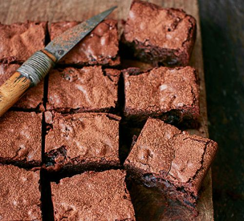

Bourbon Black Cherry& bacon brownies

These American traybake brownies include all of our favourite things,
chocolate, booze and bacon - pure decadence
Ingredients
- 200g dried sour cherries
- 100ml bourbon
- 1 tsp cinnamon
- 50ml maple syrup
- 6 rashers smoked streaky bacon
-
your favourite brownie mixture (see Goes well with for our Best-ever
brownies recipe)
- a little cocoa powder, for dusting
Method
-
Heat oven to 180C/160C fan/gas 4. In a small pan, warm (don’t boil) the
cherries in the bourbon, then leave to infuse for at least 20 mins.
-
Meanwhile, mix the cinnamon with the maple syrup and brush both sides of
the bacon with it. Lay the rashers on a rack set over a roasting tin
covered in foil and roast, basting occasionally with the syrup, for
about 20 mins until they look nicely browned. Take them out and leave to
cool completely on the rack while you make the brownie mixture.
-
Follow your chosen recipe to make the brownie mixture and heat oven to
the required temperature. Drain the bourbon-soaked cherries and add them
to the brownie mixture. Chop the bacon into little pieces (it will
crumble very easily) and add to the mixture too, stirring everything
together. Bake as per the recipe, then leave to cool completely before
dusting with cocoa and slicing into squares.
Nutrition Facts
| Nutrition Facts |
| Servings: 4 |
|
| Amount per serving |
| Calories |
101 |
|
%Daily Vale |
| Total Fat 3.6g |
5% |
| Saturated Fat 0.5g |
3% |
See More
Comment